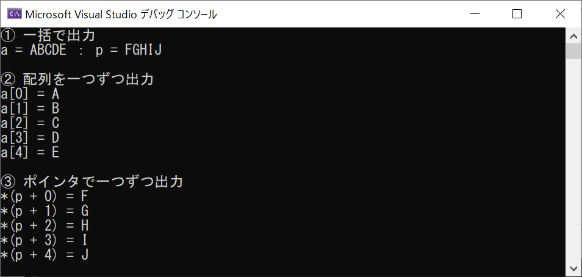

メモ：C/C++ ポインタと参照渡し
ポインタと参照渡しの違いが良くわからないので、テストコードで復習
配列のメモリ領域
test.c
test.c の実行結果
16進数表記で４バイト分( int型の大きさ )ずつアドレスが変わっているので、
配列は連続してメモリを確保していることが確認できる
(C言語において配列は，メモリの連続した区間を使うという約束になっている)
ポインタに代入されるもの
test2.c
test2.c の実行結果
①ポインタの「値」は、変数の「アドレス」
②ポインタの示すアドレス先の値を取得できる
③ポインタで、アドレス先の変数の値を操作できる
④ポインタ自身もアドレスを持つ
配列とポインタ
test3.c
test3.c の実行結果
① ポインタの値（アドレス）がデータ型１つ分変化している
（この場合は int なので４バイト）
② バッファオーバーフローしないよう、ループは４回
③ ２つ前のデータを取得
ポインタと文字列
test4.c
test4.c の実行結果

参照渡し
test5.cpp
test5.cpp の実行結果
参照先の出力と全く同じになる
違いを整理
| ポインタ変数 | 参照変数 |
|---|
| 書式 | int* p = &a; | int& r = a; |
|---|
| アドレス | 自身のアドレスを持つ | 参照先と同じ |
|---|
| 値 | 参照先のアドレス | 参照先の値
(値を持たない、アドレスだけの変数と捉えたほうが正確か?)
(変数に別名を付ける、と言ったほうが正確らしい) |
|---|
う～ん、なんとなく違いをわかってきたが、使いわけがよくわからない
どちらかでなくてはならない、のはどういう状況なのだろうか？
継続調査だね
参考になったサイト
C++ 参照【関数におけるポインタ渡しと参照渡しの違い】
第3回：アドレスとポインタ変数 (5/18)
ポインタ (プログラミング) - Wikipedia
値渡し、ポインタ渡し、参照渡しの違い